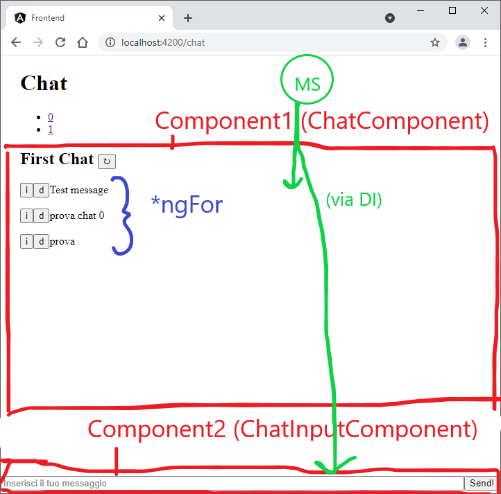
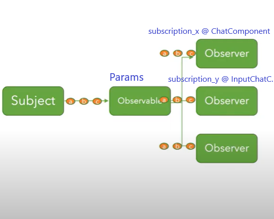

Angular Chat
Il seguente tutorial vuole ripercorrere i concetti fondamentali di Angular, provandoli nella pratica. Per rendere l'esperimento più realistico, utilizzeremo le API viste nella giornata 5 del corso, una CRUD di messaggi.
projects\webapi\src\server.ts (CRUD):
1) List messages (READ)
Request:
URL: http://localhost:3000/api/messages
Method: GET
Example Response:
[
{"id":0,"timeStamp":"2021-06-14T13:26:24.242Z","content":"Test message 1"},
{"id":0,"timeStamp":"2021-06-14T13:26:24.242Z","content":"Test message 1"},
]
2) Get message (READ)
Request:
URL: http://localhost:3000/api/messages/:id
Method: GET
Example Response:
{"id":0,"timeStamp":"2021-06-14T13:26:24.242Z","content":"Test message 1"}
2) Create message (CREATE)
Request:
URL: http://localhost:3000/api/messages
Method: POST
Payload: {text: "Test message 1"}
Example Response:
{"id":0,"timeStamp":"2021-06-14T13:26:24.242Z","content":"Test message 1"}
3) Delete message (DELETE)
Request:
URL: http://localhost:3000/api/messages/:id
Method: DELETE
Example Response:
{"msg":"message with ID 0 is deleted"}
4) Modify message (UPDATE)
Request:
URL: http://localhost:3000/api/messages/:id
Method: PUT
Payload: {text: "Test message 2"}
Example Response:
{"id":0,"timeStamp":"2021-06-14T13:26:24.242Z","content":"Test message 2"}
Nota: è stato aggiunto il parametro 'chat'. Se non specificato l'API utilizza i messaggi della chat di 'default',
altrimenti permette di utilizzare altre chat.
e.g.:
// recupera i messaggi dalla chat 0
URL: http://localhost:3000/api/messages?chat=0
Method: GET
// recupera i messaggi dalla chat 1
URL: http://localhost:3000/api/messages?chat=1
Method: GET
// crea un messaggio nella chat 1
URL: http://localhost:3000/api/messages?chat=1
Method: POST
Payload: {text: "Test message 1"}
Un'altro strumento molto valido per imparare a programmare in Angular è il tutorial ufficiale Tour of heroes.
Inizializzazione progetto
Angular ha la propria CLI per utilizzare gli strumenti che mette a disposizione e/o eseguire i task che normalmente sono necessari nel corso dello sviluppo web:
- build
- run
- test
- schematics (generazione codice automatica)
- progetto
- componenti
- servizi
- update
- ...
Installare l'angular cli e inizializzare il progetto:
corso_web\projects> npm install -g @angular/cli
corso_web\projects> ng new --defaults frontend
corso_web\projects> cd frontend
corso_web\projects/frontend> ng serve
Potete avviare lo sviluppo da qualsiasi linea di comando e utilizzare qualsiasi istanza di
vscode,
ma vi consiglio di aprire un'istanza separata di vscode e utilizzare il terminale
integrato per un'organizzazione più pulita. Per avviare il webserver di sviluppo:
Users\bucchric>cd workspace\corso_web\projects\frontend
corso_web\projects\frontend> ng serve
Composizione progetto
Il progetto è così composto:
C:\Users\bucchric\workspace\corso_web\projects\frontend>tree -L 1
.
├── e2e # progetto end-to-end testing
├── node_modules # librerie javascript
├── src # applicazione (sorgenti)
├── .browserslistrc # lista compatibilità browser (metadati)
├── .editorconfig # regole di formattazione
├── .gitignore # inizializzazione con git, .gitignore preimpostato
├── angular.json # impostazioni di progetto, come compilazioni, riferimenti a file (.sln)
├── karma.conf.js # configurazione unit test
├── package-lock.json # dipendenze specifiche alle build. Ogni installazione è uguale alle altre
├── package.json # dipendenze del progetto. Ogni installazione può variare di qualche versione (dipendentemente da quanto specificato)
├── README.md
├── tsconfig.app.json # impostazioni TypeScript (più estensioni)
├── tsconfig.json
├── tsconfig.spec.json
└── tslint.json # regole di formattazione (come .editorconfig), specifiche di Typescript
3 directories, 9 files
Mentre l'applicazione:
C:\Users\bucchric\workspace\corso_web\projects\frontend\src>tree -L 2
.
├── app
│ ├── app.component.ts # 1) Componente
│ ├── app.component.html # 2) Template
│ ├── app.component.css # 3) regole css del componente
│ ├── app.component.spec.ts # 4) Unit Test componente
│ └── app.module.ts
├── assets # file statici, tipicamente immagini
├── environments # file di configurazione di environment, iniettati durante la compilazione (prod/dev o altro)
│ ├── environment.prod.ts
│ └── environment.ts
├── favicon.ico
├── index.html # entry point html del sito, difficilmente modificato se non nelle impostazioni inziali (metadati, titolo)
├── main.ts # entry point ts, anche questo difficilmente da modificare. Serve per fare il bootstrap del modulo "Root"
├── polyfills.ts # compatibilità tra browser. È possibile inserire implementazioni al volo (ad esempio: https://developer.mozilla.org/en-US/docs/Web/JavaScript/Reference/Global_Objects/Array/entries)
├── styles.css # css globale
└── test.ts
3 directories, 13 files
Architettura applicazione

Componenti (doc)
I componenti sono uno dei principali elementi di angular, hanno un loro ciclo di vita dalla creazione alla costruzione (tipicamente quando 'vengono visualizzati'). Sono composti dalla logica (ts) e dalla view (html).
Creazione del componente chat e chat-input:
BucchRic@IPR-SUP39 projects/frontend (master)$ ng generate component components/chat
CREATE src/app/components/chat/chat.component.html (19 bytes)
CREATE src/app/components/chat/chat.component.spec.ts (612 bytes)
CREATE src/app/components/chat/chat.component.ts (267 bytes)
CREATE src/app/components/chat/chat.component.css (0 bytes)
UPDATE src/app/app.module.ts (399 bytes)
BucchRic@IPR-SUP39 projects/frontend (master)$ ng generate component components/chat-input
CREATE src/app/components/chat/chat-input.component.html (19 bytes)
CREATE src/app/components/chat/chat-input.component.spec.ts (612 bytes)
CREATE src/app/components/chat/chat-input.component.ts (267 bytes)
CREATE src/app/components/chat/chat-input.component.css (0 bytes)
UPDATE src/app/app.module.ts (399 bytes)
Utilizzare la CLI non è assolutamente obbligatorio, però permette di utilizzare gli
schematics
che
vanno a precompilare il codice. In questo caso non solo ha creato Component, Template, test e css, ma
ha
associato il componente al Modulo.
Per utilizzare il componente ci sono due modi:
- via selector (
app-chat) - via routing (vedremo), ovvero esiste un tag
<router-outlet></router-outlet>'placeholder', nel quale si gestisce l'istanziazione del componente dipendentemente dall'URL
Elementi da creare:
- Componente Chat, responsabile di mostrare la lista di messaggi.
- Il generatore mette tra i componenti dichiarati
ChatComponent. Tutti i componenti utilizzati devono essere dichiarati in unModule. - Il componente può essere 'istanziato' tramite 1) routing (ma non è il nostro caso
attualmente)
oppure
via 2) tag html
app-chat - Un componente può avere parametri di ingresso e/o uscita. In questo esempio metteremo un
parametro di
input "chat-name" ad indicare il titolo della Chat:
@Input('chat-name') public name: string;. Questi parametri possono essere utilizzati sia per la comunicazione tra Component (padre-figlio), che per parametrizzare il Component. - Nel template, per visualizzare le variabili si usa la sintassi
{{ variable }} - In questo Component mostreremo la lista di
messagesche viene dal backend, per cui nel template utilizzeremo ladirettiva *ngForutile a simulare sul template un ciclo for
- Il generatore mette tra i componenti dichiarati
- Componente ChatInput, responsabile dell'inserimento di messaggi.
- Qui avremo la variabile
inputText, possiamo utilizzare[(ngModel)]per legare la variable dal template alla logica (e viceversa).[(ngModel)]è una direttiva Angular che risiede nel moduloFormsModule, per cui bisogna includerla nel nostro Modulo contenitore. - Utilizzeremo un bottone per inviare l'input text. Angular permette di legare (bind) i metodi
del
Component tramite la sintassi
():<button (click)="SendMessage(inputText)">Send!</button>
- Qui avremo la variabile
-
Modello
IMessage<string>. Questo non è un 'elemento' Angular, ma una semplice classe typescript.
Container (app.component.html):
<h1> {{ title }} </h1>
<app-chat chat-name="First chat"></app-chat>
<app-chat-input class="bottom"></app-chat-input>
Le Direttive (doc) sono degli attributi nell'html che servono a comunicare con la logica e a modificare il DOM. Esistono diverse direttive built-in, ma è possibile anche scrivere le proprie custom.
<div *ngFor="let item of items; let i=index">{{i + 1}} - {{item.name}}</div><div *ngIf="IsDataVisible"> {{someData}}</div><div [ngClass]="isSpecial ? 'special' : ''"></div>- ...
I tipi di direttive esistenti possono essere classificate in due categorie:
- Strutturali (con l'*) che servono ad appendere/modificare i nodi DOM (*ngIf, *ngFor, *NgSwitchCase)
- Attributo, che modificano il comportamento del tag. In generale:
[]valuta typescript, dati in ingresso()lega un metodo ad un evento- sono direttive anche gli attributi non nativi html senza sintassi particolari
Wrap up (files):
Chat:
import { Component, Input, OnInit } from '@angular/core';
import { IMessage } from '../../models/message';
@Component({
selector: 'app-chat',
template: `
<h2> {{ name }} </h2>
<div>
<p *ngFor="let m of messages;"> {{ m.content }} </p>
</div>
`,
styleUrls: ['./chat.component.css']
})
export class ChatComponent implements OnInit {
@Input('chat-name') public name: string;
public messages: IMessage[] = [
{ id: 1, timeStamp: new Date(), content: 'test message 1'},
{ id: 2, timeStamp: new Date(), content: 'test message 2'},
];
constructor() { }
ngOnInit(): void { }
}
ChatInput:
import { Component, OnInit } from '@angular/core';
@Component({
selector: 'app-chat-input',
template: `
<input type="text"
placeholder="Inserisci il tuo messaggio"
[(ngModel)]="inputText">
<button (click)="SendMessage(inputText)">Send!</button>
`,
styleUrls: ['./chat-input.component.css']
})
export class ChatInputComponent implements OnInit {
public inputText: string;
constructor() { }
ngOnInit(): void { }
public SendMessage(inputText: string): void {
console.log(inputText);
}
}
Servizi (doc)
I servizi sono singleton che vivono tipicamente lungo tutto il corso della vita dell'applicazione. Vengono usati per incapsulare in modo circoscritto una logica e comunicare tra elementi software. I Component hanno funzioni relative al template, mentre i Services sono agnostici dalla vista.
Sfruttano la DI, ovvero possono essere iniettati all'interno di altri elementi software dichiarandoli all'interno del loro costruttore. Questo ci da i seguenti vantaggi:
- Separare le logiche in Servizi autonomi
- Comunicare facilmente tra gli elementi Angular (che riferiscono allo stesso servizio)
- Facile implementazione del Single Responsability Principle
- Testare sia i Servizi che gli altri elementi: la DI ci permette di sostituire le istanze dei Services
I Services non necessitano di essere dichiarati all'interno di un Modulo, il loro ciclo di vita è
definito
staticamente (@Injectable({ providedIn: 'root',}) è il più tipico decorator definito prima
del
Servizio
il quale indica che vivrà dal momento in cui nasce l'applicazione.)
Come esempio genereremo un servizio MessagesService che sarà responsabile di comunicare con
le
API CRUD
dei messaggi:
BucchRic@IPR-SUP39 projects/frontend (master)$ ng generate service services/messages
CREATE src/app/services/messages.service.spec.ts (367 bytes)
CREATE src/app/services/messages.service.ts (137 bytes)
Per comunicare via HTTP utilizziamo HttpClient che è una classe Angular che richiede il
HttpClientModule (da importare dove viene utilizzato, nel nostro caso AppModule)
import { HttpClient, } from '@angular/common/http';
import { Injectable } from '@angular/core';
import { IMessage } from '../models/message';
@Injectable({
providedIn: 'root'
})
export class MessagesService {
private readonly ENDPOINT = 'http://localhost:3000/api/messages';
constructor(private http: HttpClient) { }
// public GetMessages(): Promise<any> {
// return this.http.get('http://localhost:3000/api/messages')
// .toPromise<any>();
// }
public GetMessages(): Promise<IMessage<string>[]> {
return this.http.get<IMessage<string>[]>(this.ENDPOINT)
.toPromise<IMessage<string>[]>();
}
public DeleteMessage(message: IMessage<string>): Promise<boolean> {
return this.http.delete(this.ENDPOINT + '/' + message.id)
.toPromise<any>()
.then(() => {
return true;
})
.catch(() => {
return false;
});
}
public CreateMessage(content: string): Promise<IMessage<string>> {
return this.http.post<IMessage<string>>(this.ENDPOINT, { text: content }).toPromise();
}
}
Routing (doc)
Come abbiamo visto nelle prime lezioni la navigazione e la gestione dell'URL ha una sua logica, supportata dalle API del browser (ad esempio dopo l'# non viene fatta la chiamata al web-server).
Angular da uno strumento molto comodo per gestire la navigazione (routing):
- gestione dei parametri/querystring
- riduce le chiamate a backend
- gestione del ciclo di vita dei component
- logica di navigazione (Resolver e Guard in entrata al Component)
- caricamento dinamico dell'applicazione
Per generare il routing:
BucchRic@IPR-SUP39 projects/frontend (master)$ ng generate module app-routing --flat --module=app
import { NgModule } from '@angular/core';
import { RouterModule, Routes } from '@angular/router';
import { ChatComponent } from './components/chat/chat.component';
const routes: Routes = [
{
path: '',
redirectTo: '/chat',
pathMatch: 'full'
},
{ path: 'chat', component: ChatComponent },
{ path: 'chat/:chatNumber', component: ChatComponent },
];
@NgModule({
declarations: [],
imports: [
RouterModule.forRoot(routes),
],
exports: [RouterModule]
})
export class AppRoutingModule { }
In una pagina della nostra applicazione dobbiamo aggiungere il tag router-outlet dove verrà
gestita la
navigazione
<!-- app.component.html -->
<h1> {{ title }}</h1>
<nav>
<ul>
<li><a routerLink="/chat/0">0</a></li>
<li><a routerLink="/chat/1">1</a></li>
</ul>
</nav>
<router-outlet></router-outlet>
Utilizzando il routing in questo use-case, abbiamo la possibilità di utilizzare la funzionalità di recupero parametri ad esempio. Ipotizzando che la nostra API messages possa gestire più di una chat alla volta:
constructor(
private messageService: MessagesService,
private route: ActivatedRoute,
) {
// 1) recupero statico dallo snapshot alla creazione del Component
this.chatNumber = Number(this.route.snapshot.paramMap.get('chatNumber'));
}
ngOnInit(): void {
// 2) recupero dinamico, ogni qualvolta il parametro cambi
this.route.paramMap.subscribe(
(value: ParamMap) => {
this.chatNumber = Number(value.get('chatNumber'));
this.reloadMessages();
}
);
}
Nei due differenti casi di recupero parametri:
- Recupero 'statico' alla creazione del Component. Ricordatevi che (più o meno) un component vive quando viene visualizzato. (Component lifecycle doc)
- Recupero 'dinamico', tramite un
Observable* che scatena un evento alla modifica del parametro
Observable
Angular utilizza una libreria js esterna per l'implementazione del pattern Observable: rxjs (doc).

// l'Observer (creato con la sottoscrizione) ha tre metodi:
// 1) next (esegui la funzione quando cambia il valore)
// 2) error (esegui la funzione quando l'Observable emette un'eccezione)
// 3) complete (esegui la funzione quando l'Observable si dichiara 'concluso')
(method) Observable<T>.subscribe(
next?: (value: T) => void,
error?: (error: any) => void,
complete?: () => void
): Subscription
Rxjs è una libreria complessa, che richiederebbe una lezione a sé, per questo motivo mi limito a dare alcuni consigli.
- Tante API Angular restituiscono un
Observable, prendete confidenza come abbiamo fatto per i param, costruendo l'Observer (all'interno disubscription). Questo soddisfa già un utilizzo basico. - È un design pattern e come tale va utilizzato se vi semplifica la vita (e una volta capito lo
fa). Se
vedete dove può essere comodo, potete implementare e utilizzare i vostri
SubjecteObservable, e sfruttare la libreria rxjs - la Promise è un Observable che ha un solo valore (vedi
HttpClientche restituisce unObservable)
Angular Material (libreria Component doc)
Una libreria UI che aggiunge valore sia ai componenti grafici, uniformando gli elementi e predisponendo css di base, sia estendendo le funzionalità degli elementi.
Esistono tanti altri esempi (come Bootstrap che abbiamo visto), questa ha le seguenti caratteristiche:
- integrata con Angular (sia per la CLI, che per le update)
- si basa su dei concetti di UX agnostici di Google (link)
- stabile
- non particolarmente folta
Per installarlo:
BucchRic@IPR-SUP39 projects/frontend (master)$ ng add @angular/materialEsempi:
// app.module.ts
@NgModule({
declarations: [
...
],
imports: [
...
// Material
MatButtonModule,
MatIconModule,
MatInputModule,
MatDialogModule,
],
providers: [],
bootstrap: [AppComponent]
})
export class AppModule { }
// chat.component.ts
public Action(message: IMessage<string>): void {
this.dialog.open(DialogChatComponent, {
data: message
});
}
// dialog-chat.component.ts
import { Component, Inject, OnInit } from '@angular/core';
import { MatDialogRef, MAT_DIALOG_DATA } from '@angular/material/dialog';
import { IMessage } from 'src/app/models/message';
@Component({
selector: 'app-dialog-chat',
template: `
<h1 mat-dialog-title>Chat details</h1>
<div mat-dialog-content>{{message.id}}, {{ message.timeStamp | date }}, {{message.content}}</div>
<div mat-dialog-actions>
<button mat-button
mat-dialog-close>Close</button>
</div>
`,
styleUrls: ['./dialog-chat.component.css']
})
export class DialogChatComponent implements OnInit {
public message: IMessage<string>
constructor(
public dialogRef: MatDialogRef<string>,
@Inject(MAT_DIALOG_DATA) public data: IMessage<DialogChatComponent>,
) {
this.message = data;
}
}
Pipe (doc)
Le Pipe sono un ulteriore strumento Angular che si ispira alla | unix e proprio come essa
permette di trasformare un input qualsiasi.
Nell'accezione Angular ha spesso compiti molto semplici come tradurre date, stringhe, numeri, ecc....
<div mat-dialog-content>{{message.id}}, {{ message.timeStamp | date:"dd/MM/yy" }}, {{message.content}}</div>
Anche qui esistono sia le pipe default, ma è possibile implementare anche le proprie custom.
Modules (doc)
I moduli sono contenitori di elementi angular (Component, Services, Directives, Guards, ecc...).
Permettono di modularizzare l'applicazione:
- Separazione logica e organizzativa
- Riuso
- Ottimizzazione nella compilazione
- Ottimizzazione nel caricamento runtime (lazy loading)